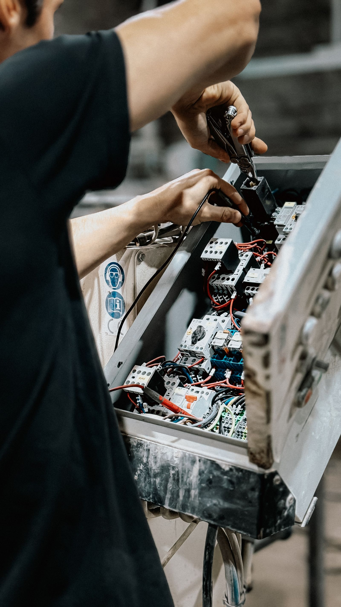
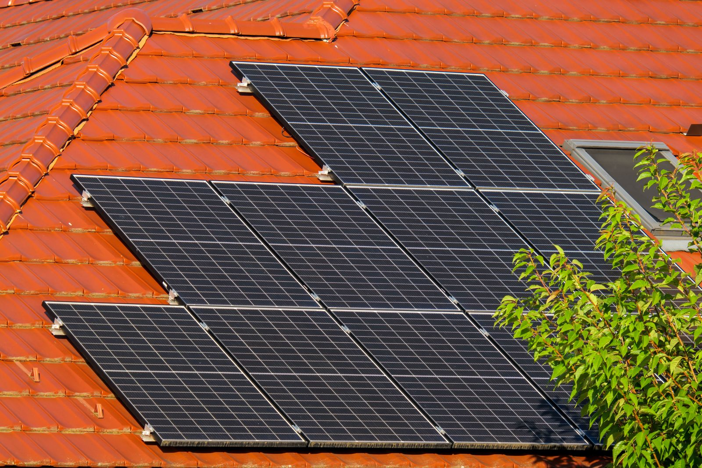
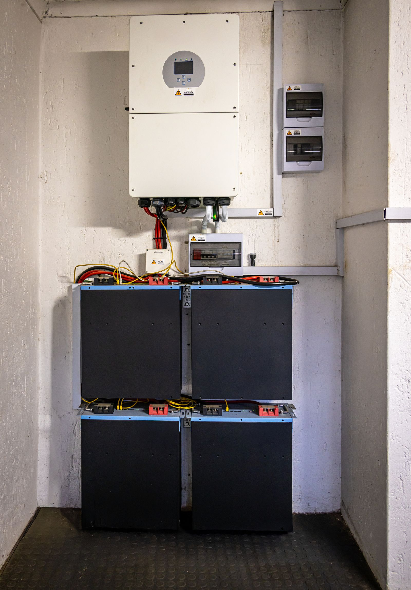

A solar inverter is one of the most important components of a solar power system. It converts the DC electricity generated by solar panels into AC electricity that can be used by household appliances and electrical equipment.
Like any electronic device, a solar inverter can occasionally experience temporary errors, warning messages, communication problems, or unexpected shutdowns. In some situations, restarting the inverter can help clear a minor software or operational issue and restore normal operation.
However, shutting down and restarting a solar inverter should always be done carefully. Solar systems contain high-voltage DC electricity, which can remain dangerous even when the inverter screen is turned off.
This guide explains the general process of shutting down and restarting a solar inverter safely.
Always follow the shutdown and startup procedure provided in your inverter manufacturer’s user manual. If you are unsure which switches to operate, contact a qualified solar technician or licensed electrician. Do not open the inverter enclosure or attempt electrical repairs yourself.
When Should You Shut Down and Restart a Solar Inverter?
A manual shutdown and restart, sometimes called rebooting or power cycling, may be useful in certain situations. You might consider restarting your inverter when:
- The inverter displays an error or warning message.
- The inverter is not generating electricity despite sufficient sunlight.
- The screen appears frozen or unresponsive.
- The inverter has unexpectedly stopped operating.
- Communication between the inverter and monitoring app has been interrupted.
- You want to check whether the system switches are properly turned on.
- A temporary electrical or software fault needs to be cleared.
However, restarting the inverter will not fix every problem. Persistent error codes, overheating, damaged wiring, battery faults, insulation faults, or equipment failures require professional inspection.
Before You Begin: Important Safety Checks
Before switching anything off, take a moment to identify the components of your solar system. Most grid-connected solar systems have some combination of:
- AC isolator or solar supply main switch.
- DC isolator located near or underneath the inverter.
- Solar panels installed on the roof.
- Inverter display or monitoring system.
- Additional battery isolators if the system includes energy storage.
The exact arrangement may vary depending on the manufacturer, installation design, and local electrical regulations.

Check Your Inverter Manual First
Different inverter brands use different shutdown and startup procedures. Some systems include batteries, backup circuits, or additional protection devices that require a specific sequence. If your inverter manual is available, use it as the primary reference.
If you cannot identify the correct switches, do not guess. Contact your installer or a qualified electrician.
Step-by-Step Guide: How to Shut Down a Solar Inverter
Turn Off the AC Isolator
The first step in the general shutdown procedure is to switch off the AC isolator. The AC isolator disconnects the inverter from the household electrical supply and the main AC electrical system.
You will usually find the AC switch:
- Inside the main electrical switchboard.
- Near the electricity meter.
- Next to the solar inverter.
- In a dedicated solar protection box.
The switch may be labeled: AC Isolator, Solar AC Switch, Solar Supply Main Switch, or Inverter AC Isolator.
What happens when you turn off the AC switch? When the AC supply is disconnected, the inverter can no longer send electricity into the home's AC electrical network. Depending on the inverter model, the display may continue operating temporarily because DC power from the solar panels may still be available.
Do not proceed based on assumptions about switch labels. Always confirm the correct switch according to your installation and manual.
Turn Off the DC Isolator
After switching off the AC isolator, locate the DC isolator. The DC isolator disconnects the direct-current electricity coming from the solar panels before it reaches the inverter.
It is commonly installed directly underneath the inverter, beside the inverter, or inside a dedicated DC protection enclosure.
The DC switch may be labeled: DC Isolator, PV DC Switch, Solar DC Disconnect, or PV Array Isolator. Turn the DC isolator to the OFF position according to the markings on the switch.
What should you expect? Once both AC and DC supplies have been disconnected, the inverter screen should eventually turn off. Indicator lights may also go out. However, some inverter models may take several minutes to completely shut down.
Never assume that a blank screen means the entire solar system is electrically safe. Solar panels can continue producing electricity whenever they receive sunlight.

Wait Before Restarting
After switching off the appropriate isolators, wait for approximately 5 minutes unless your manufacturer’s instructions specify a different waiting period. This waiting period allows:
- Internal capacitors to discharge.
- The inverter's electronic circuits to shut down completely.
- Temporary software or communication faults to reset.
- Internal components to return to a safe standby condition.
Do not immediately switch the system back on unless instructed by the manufacturer. While waiting, inspect the inverter from the outside for obvious signs of trouble, such as:
- Burning smells.
- Smoke or unusual noises.
- Excessive heat.
- Physical damage.
- Water ingress.
- Warning lights that remain active.
If you notice any of these issues, do not restart the system. Contact a qualified professional.
Step-by-Step Guide: How to Restart a Solar Inverter
Restarting a solar inverter generally involves restoring power in the correct sequence.
Turn the DC Isolator ON First
After the waiting period, turn the DC isolator back to the ON position. The DC supply from the solar panels is now reconnected to the inverter.
Why is the DC switch turned on first? Many inverter manufacturers recommend restoring the DC supply before reconnecting the AC supply. This allows the inverter to detect the solar panel input voltage before connecting to the electrical grid.
It is also important to avoid operating certain DC isolators under load unless specifically designed for that purpose. Switching DC circuits incorrectly can create electrical arcing, which may damage equipment and create serious safety hazards.
Always follow the manufacturer's instructions for your specific inverter model.
Turn the AC Isolator ON
Once the DC isolator has been restored, switch the AC isolator back to the ON position. This reconnects the inverter to the household electrical system. The inverter should begin its startup process.
Depending on the manufacturer, the startup sequence may include:
- Initial system diagnostics.
- Voltage and frequency checks.
- Grid synchronization.
- Internal safety testing.
- Solar input detection.
- Communication with monitoring equipment.
What happens during inverter startup? It is normal for a solar inverter to take some time before returning to normal operation. Most inverters do not begin producing electricity immediately after being switched on. During startup, you may notice flashing indicator lights, a blank screen followed by system information, warning or initialization messages, automatic internal testing, delayed power generation, or temporary grid synchronization messages.
Some inverters may take one to several minutes to complete their startup process. Do not repeatedly switch the inverter on and off during this period. Allow the system enough time to complete its normal startup checks.

Understanding AC and DC Isolator Switches
One of the most common sources of confusion for solar system owners is identifying whether an isolator switch is ON or OFF. Different switch designs use different indicators and markings. It is important not to assume that every red or green indicator works like a traffic light.
Red and Green Indicator Windows
Some older or certain types of electrical isolators include small indicator windows showing red or green. Many people naturally assume Green = ON and Red = OFF. However, electrical switch indicators do not always follow this convention. In some isolator designs, RED may indicate ON or live electrical power, while GREEN may indicate OFF or disconnected. This depends on the specific switch manufacturer and design.
Always Check the Markings
Never rely only on the color of the indicator. Look for the actual ON and OFF markings printed on the switch. If the markings are unclear, consult the equipment manual or ask a qualified electrician.
Rotary DC Isolator Switches
Modern solar installations commonly use rotary-style DC isolators. These switches operate by rotating a handle or dial between different positions. Typical markings include ON, OFF, and sometimes numerical positions or arrows.
DC isolator ON position: when the rotary switch is in the ON position, the solar panel DC circuit is connected to the inverter, and the inverter can receive electricity generated by the solar panels.
DC isolator OFF position: when the rotary switch is in the OFF position, the DC circuit is disconnected according to the isolator’s design, which prevents the normal flow of solar panel electricity into the inverter.
Turning off the inverter does not necessarily eliminate all electrical voltage from the solar panels. Solar panels generate electricity whenever exposed to sunlight. For this reason, solar DC systems should always be treated as potentially energized.
What If the Inverter Does Not Restart?
If your inverter does not return to normal operation after restarting, do not repeatedly cycle the power. Check the following basic information:
- Is the AC switch ON? Confirm that the solar AC isolator or solar supply main switch is in the correct ON position.
- Is the DC switch ON? Verify that the DC isolator is correctly switched on according to the inverter manufacturer's instructions.
- Is there enough sunlight? Solar inverters may not operate normally during nighttime or extremely low-light conditions. Check the system during daylight hours.
- Is there an error code? Write down any error messages displayed on the inverter screen. Error codes are useful for identifying possible causes of the problem.
Check the Monitoring Application
If your inverter is connected to a monitoring platform, check whether the system is reporting grid faults, communication errors, low solar production, battery warnings, temperature issues, or system shutdown notifications.
Common Problems That a Restart May Not Fix
A simple reboot can sometimes clear temporary faults, but it cannot repair damaged hardware or serious electrical problems. Professional inspection may be required for:
- Persistent inverter error codes.
- Battery charging problems.
- Overheating.
- Burning smells.
- Damaged cables.
- Loose electrical connections.
- Insulation resistance faults.
- Ground faults.
- Grid voltage problems.
- Frequency abnormalities.
- Internal inverter component failures.
If the inverter repeatedly shuts down or displays the same warning after restarting, contact your solar installer or a qualified technician.
Frequently Asked Questions
How long should I leave my solar inverter switched off?
In many general shutdown procedures, waiting approximately five minutes allows the inverter to fully power down. However, always follow the manufacturer's recommended waiting time.
Can I restart my inverter during the daytime?
Yes, a restart may be performed during daylight if necessary, but solar panels continue generating electricity during daylight hours. Always follow proper safety procedures and manufacturer instructions.
Is it safe to turn off the inverter myself?
Basic external switch operation may be possible for system owners, but electrical systems can be dangerous. If you are unsure about the switches or sequence, contact a qualified professional.
Why does my inverter take several minutes to restart?
Solar inverters perform internal safety checks and synchronize with the electrical grid before beginning normal operation. This delay is usually normal.
Should I restart my inverter frequently?
No. Frequent restarting is not a normal solution for ongoing problems. If your inverter regularly stops working, investigate the underlying cause with a qualified technician.
Restarting a solar inverter can sometimes resolve temporary operational issues, but it should never replace proper maintenance or professional troubleshooting. Always follow your inverter manufacturer's instructions, identify AC and DC isolators correctly, never open the inverter enclosure unless qualified, treat solar panel wiring as potentially energized, avoid electrical repairs without professional training, and contact a licensed electrician or solar technician when in doubt.
A properly maintained solar inverter provides reliable energy conversion and helps ensure the long-term safety and performance of your solar power system.
Disclaimer: This article provides general educational information about solar inverter operation and shutdown procedures. Solar electrical systems vary by manufacturer, installation type, and local electrical regulations. Always consult the official inverter user manual and a qualified solar professional before performing electrical work or modifying your solar system.